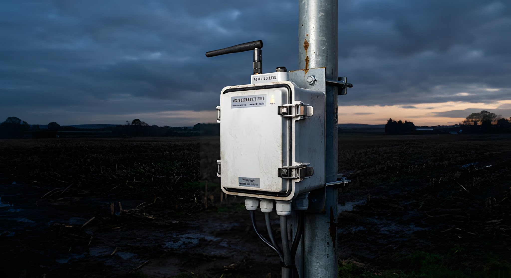

01 · Central intelligence
The JoME Hub
A weatherproof white-box controller that serves as the brain of your farm. It features a dedicated terminal connection for nutrient injection, calculating precise water flow and mineral dosing in real time via our professional mobile app.
- AClosed-loop dosing
Real-time EC and pH monitoring ensures precise chemical equilibrium within the main line.
- BProportional flow control
Injection rates dynamically adjust based on millisecond-latency flow meter telemetry.